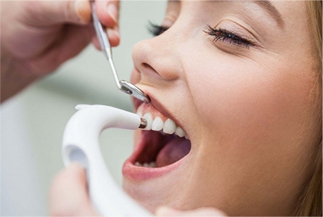

г. Красногорск, Павшинский б-р, 11, пом. 011/1
8 (495) 2015 - 02 - 06
г. Красногорск, Павшинский б-р, 11, пом. 011/1
8 (495) 2015 - 02 - 06
01

Никогда не стоит затягивать с лечением зубов. Если у Вас появились первые боли или неприятные ощущения в зубах, то сразу стоит записаться на прием к специалисту. В стоматологическом центре Fresh Dental Clinics в Красногорске врачи смогут качественно вылечить ваши зубы даже в самых сложных ситуациях, когда удаление не является безальтернативным вариантом, и тем самым помочь Вам забыть о зубной боли.
02

В случае когда вылечить или восстановить пломбой зубы уже невозможно или противопоказано, на помощь приходят керамические вкладки и коронки. Эти способы протезирования являются оптимальными при сильном разрушении зубов. Современные материалы для коронок могут дать и высокую эстетичность. Чисто же из эстетических соображений для получения так называемой «голливудской» улыбки ставят виниры. Данными видами протезирования в нашей стоматологии Вы можете не только восстановить жевательную функцию зубов, но и придать своей улыбке ослепительную красоту.
03

Самым неприятным случаем проблем с зубами для человека является отсутствие зубов. На данный момент в большинстве случаев имплантация с последующим протезированием коронкой будет самым оптимальным вариантом. Зубной имплант при установке не требует обработки соседних зубов. А при отсутствии большого количества зубов может быть основой мостовидной конструкции или популярного ныне варианта «Four for all». В стоматологии Fresh Dental Clinics в Павшинской пойме используют различные виды зубных имплантатов. На все ваши вопросы смогут ответить хирурги-имплантологи.
04

Неправильный прикус может стать причиной многих проблем со здоровьем, причем не только в полости рта. Для зубов неправильный прикус может быть фатальным — некоторые зубы могут разрушаться слишком быстро из-за повышенной нагрузки на них, но самым неприятным может стать противопоказания к протезированию или иплантации, потому что даже протезы не выдержат её. Лучше исправлять прикус еще в детском возрасте — в таком случае работа будет проходить быстрее и проще, с большей вероятностью благоприятного исхода. Если Вы хотите попасть к качественному ортодонту, выбирайте нашу стоматологию в Красногорске, и для Вас будет подобрано оптимальное решение.
05
Неправильный прикус может стать причиной многих проблем со здоровьем, причем не только в полости рта. Для зубов неправильный прикус может быть фатальным — некоторые зубы могут разрушаться слишком быстро из-за повышенной нагрузки на них, но самым неприятным может стать противопоказания к протезированию или иплантации, потому что даже протезы не выдержат её. Лучше исправлять прикус еще в детском возрасте — в таком случае работа будет проходить быстрее и проще, с большей вероятностью благоприятного исхода. Если Вы хотите попасть к качественному ортодонту, выбирайте нашу стоматологию в Красногорске, и для Вас будет подобрано оптимальное решение.
06
Неправильный прикус может стать причиной многих проблем со здоровьем, причем не только в полости рта. Для зубов неправильный прикус может быть фатальным — некоторые зубы могут разрушаться слишком быстро из-за повышенной нагрузки на них, но самым неприятным может стать противопоказания к протезированию или иплантации, потому что даже протезы не выдержат её. Лучше исправлять прикус еще в детском возрасте — в таком случае работа будет проходить быстрее и проще, с большей вероятностью благоприятного исхода. Если Вы хотите попасть к качественному ортодонту, выбирайте нашу стоматологию в Красногорске, и для Вас будет подобрано оптимальное решение.
07
Неправильный прикус может стать причиной многих проблем со здоровьем, причем не только в полости рта. Для зубов неправильный прикус может быть фатальным — некоторые зубы могут разрушаться слишком быстро из-за повышенной нагрузки на них, но самым неприятным может стать противопоказания к протезированию или иплантации, потому что даже протезы не выдержат её. Лучше исправлять прикус еще в детском возрасте — в таком случае работа будет проходить быстрее и проще, с большей вероятностью благоприятного исхода. Если Вы хотите попасть к качественному ортодонту, выбирайте нашу стоматологию в Красногорске, и для Вас будет подобрано оптимальное решение.
08
Неправильный прикус может стать причиной многих проблем со здоровьем, причем не только в полости рта. Для зубов неправильный прикус может быть фатальным — некоторые зубы могут разрушаться слишком быстро из-за повышенной нагрузки на них, но самым неприятным может стать противопоказания к протезированию или иплантации, потому что даже протезы не выдержат её. Лучше исправлять прикус еще в детском возрасте — в таком случае работа будет проходить быстрее и проще, с большей вероятностью благоприятного исхода. Если Вы хотите попасть к качественному ортодонту, выбирайте нашу стоматологию в Красногорске, и для Вас будет подобрано оптимальное решение.